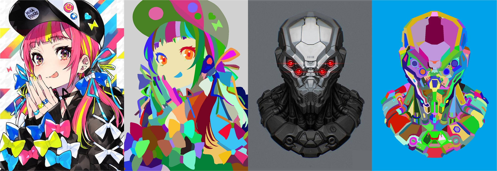

DanbooRegion: An Illustration Region Dataset
European Conference on Computer Vision (ECCV) 2020

Examples of annotations created by artists manually. Artists are able to identify region compositions in illustrations, but can computer vision techniques? Let's see our explosion on artist' perception on artistic region compositions in their daily digital painting workflow...
Abstract
Region is a fundamental element of various cartoon animation techniques and artistic painting applications. Achieving satisfactory region is essential to the success of these techniques. Motivated to assist diversiform region-based cartoon applications, we invite artists to annotate regions for in-the-wild cartoon images with several application-oriented goals: (1) To assist image-based cartoon rendering, relighting, and cartoon intrinsic decomposition literature, artists identify object outlines and eliminate lighting-and-shadow boundaries. (2) To assist cartoon inking tools, cartoon structure extraction applications, and cartoon texture processing techniques, artists clean-up texture or deformation patterns and emphasize cartoon structural boundary lines. (3) To assist region-based cartoon digitalization, clip-art vectorization, and animation tracking applications, artists inpaint and reconstruct broken or blurred regions in cartoon images. Given the typicality of these involved applications, this dataset is also likely to be used in other cartoon techniques. We detail the challenges in achieving this dataset and present a human-in-the-loop workflow namely Feasibility-based Assignment Recommendation (FAR) to enable large-scale annotating. The FAR tends to reduce artist trails-and-errors and encourage their enthusiasm during annotating. Finally, we present a dataset that contains a large number of artistic region compositions paired with corresponding cartoon illustrations. We also invite multiple professional artists to assure the quality of each annotation.
Files
See Also
- Source Code and Development Kit - Core algorithms only, version 0.1, several Python files. User interface not included. Licensed by Style2Paints for noncommercial research use only.
- Supplementary Document - A document of some additional exposition and engineering details.
Citation
Lvmin Zhang, Yi JI, and Chunping Liu.
"DanbooRegion: An Illustration Region Dataset."
European Conference on Computer Vision (ECCV), May 2020.
BibTeX
@InProceedings{DanbooRegion2020,
author={Lvmin Zhang and Yi JI and Chunping Liu},
booktitle={European Conference on Computer Vision (ECCV)},
title={DanbooRegion: An Illustration Region Dataset},
year={2020},
}